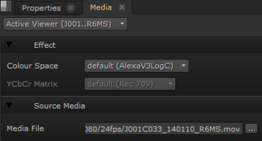

Working with .mov files can be unpredictable when compared to other formats, so Nuke gives you a few QuickTime options when reading and writing .mov files.
Nuke attempts to select the ’best fit’ combination by reading an extended list of metadata key/value pairs from the QuickTime header, including nclc atom, gama atom, and ProRes codec headers.
If you place a clip in the Viewer, or open a clip instance in the Viewer, and open the Media tab, you'll see that Nuke has a number of media-specific controls that you can manually override if the 'best fit' is not what you're looking for:

• YCbCr Matrix - sets the way Y’CbCr is converted to RGB. You can choose to use the new Rec 601 and Rec 709 or the Legacy encoding methods, which are the methods used previously in Nuke.
• Codec - sets the codec used to read (write already had a similar control) the QuickTime file.
The codec dropdown defaults to a codec appropriate for the QuickTime in question, where available, and only lists those that declare themselves able to read the file.
• Pixel Format - sets the read and write pixel format, which includes bit depth, colorspace, pixel packing, and ranges.
This setting defaults to the best format accepted by the codec, allowing Nuke to perform the conversion to RGB without the use of an unknown QuickTime transform, where possible. RGB pixel types rely on QuickTime to do the conversion from Y’CbCr when dealing with a non-RGB codec.
In addition to the nclc, gama, and ProRes data Nuke, and by extension Nuke, also write additional metadata into the file headers during export, retaining your QuickTime preferences. This combined metadata represents myriad potential QuickTimes preferences, so Nuke reads the available metadata in the following order, reverting down each level as the level above is unavailable or set to a reserved or unknown value:
• Foundry-specific metadata
• ProRes header data
• nclc atom data
• gama atom data
• The defaults associated with the chosen codec
In this way, the worst case scenario is that you end up with the chosen codec class' default values.
|
|